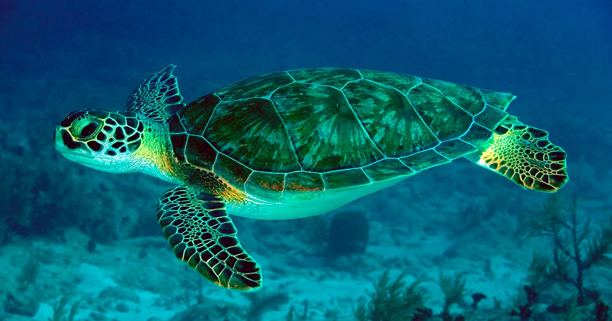

As tartarugas marinhas conseguem detectar o campo magnético da Terra e utilizá-lo para se orientar em migrações de milhares de quilômetros.

Uma das espécies marinhas mais conhecidas do mundo. Pode viver mais de 70 anos e percorrer milhares de quilômetros durante suas migrações.
Saiba maisDescubra qual espécie mais se parece com a sua personalidade respondendo algumas perguntas rápidas.
Responder Quiz